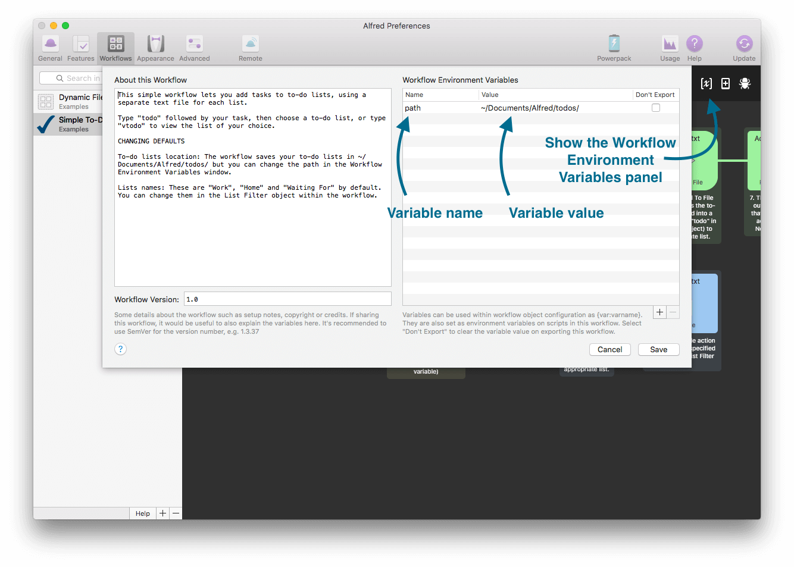
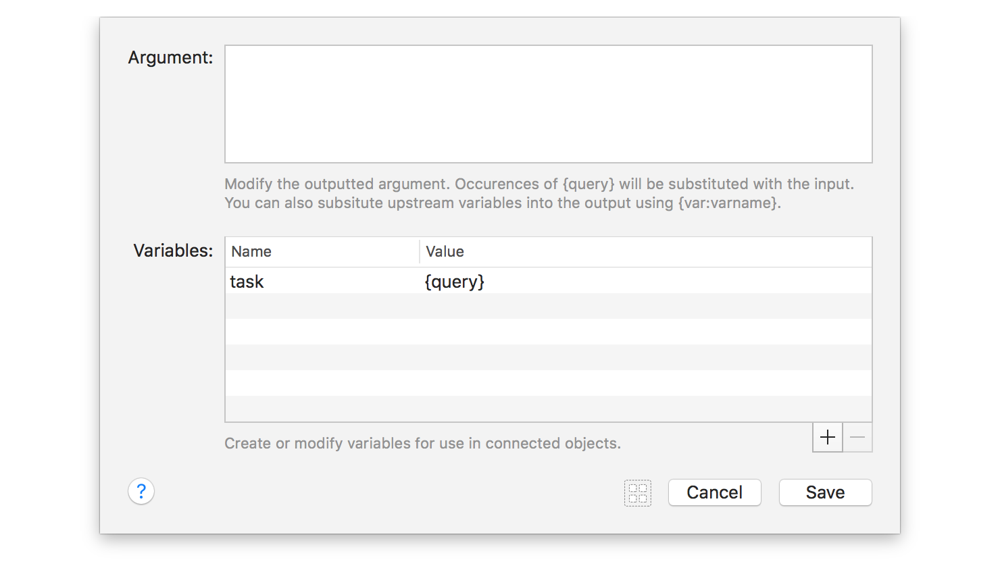
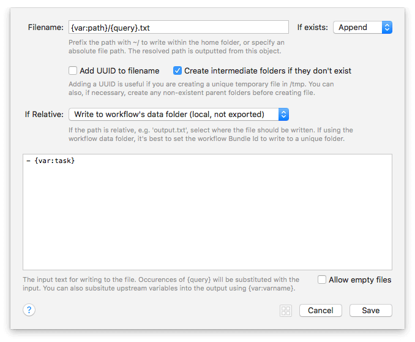

Using Variables in Workflows
Have you found yourself wanting to create a workflow where you need to enter or select multiple arguments to use later on in your workflow? Or wanted to make it easy for users to add their own identifier or API key to a workflow?
This is where you can use the new variables in Alfred 3; They can be used in a multitude of places - as keywords, arguments, in JSON utilities - and allow you to easily store an argument for use later in your workflow.
- Getting Started with Workflow Variables
- Setting Workflow Environment Variables
- Setting Variables Within a Workflow
Getting Started with Workflow Variables
We've included a few workflows in the Getting Started guides and examples in Alfred, which you can find under the [+] button at the bottom of the Workflows sidebar in Alfred's preferences.
In particular, the Getting Started > Workflow Variables and the Examples > Simple To-Do List make use of variables to store multiple pieces of information throughout the workflow.

Variables use the format {var:myvariable} where myvariable is the name you give your variable when creating it. You can then store an associated value for your variable.
You can add variables within workflow utilities (Arg and Vars and JSON) and in the Workflow Environment Variables.
Setting Workflow Environment Variables
In the Simple To-Do List workflow, the first variable to set in the Workflow Environment Variables is the path to which the to-do lists are saved. Click the [x] in the top right of your workflow to show the Workflow Environment Variables panel. Conveniently, you'll also find the "About This Workflow" information in the same panel.

Use the Workflow Environment Variables for:
- Fixed variables used throughout the workflow
- Variables the user needs to edit to use the workflow (e.g. setting a custom file path, entering their own API key for a service, etc)
These variables can be overridden dynamically within a workflow with the JSON utility object.
Setting Variables Within a Workflow
For more dynamic use of variables, you can set them as you proceed through the objects of your workflow.
Use the in-workflow variables for:
- Saving the input text query for use later
- Dynamically overriding a fixed variable
In the same Simple To-Do List workflow, the orange object is the first Arg and Vars utility, used to store the query you've just typed.

Further down, the {var:task} variable is used to filter the action to either take the green path where the variable is not empty and the task is added to a list, or the blue path where the variable is empty and the list is opened instead.
The yellow list filter object also sets an argument (selected from the pre-defined List Filter options) which is saved as {var:filename} to set the to-do list to which the {var:task} will be added.
In the Write File green object on the top stream, three variables are used;
- The {var:path} adds the file path set in the Workflow Environment Variables
- The {query} adds the name of the file selected in the yellow List Filter object
- The {var:task} inserts the content; taken from the very first object where I typed the task I wanted to add.
